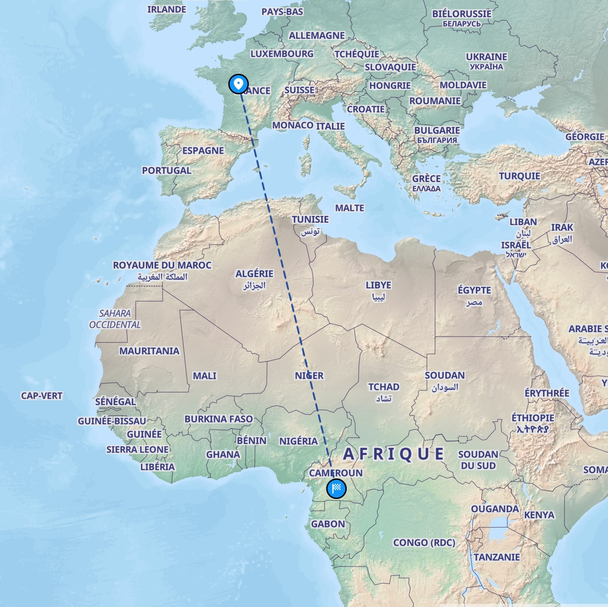
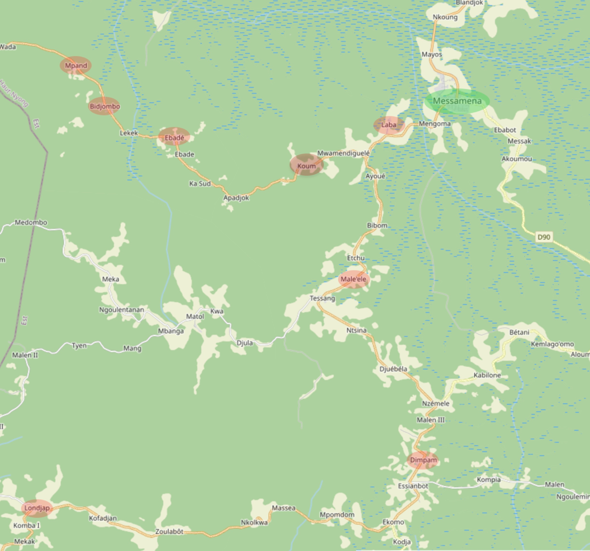

ADM - Les Amis de Messaména


À Montbazon
- Le siège de l'Association ADM
L’association « Les Amis de Messaména » intervient depuis plus de 20 ans dans 8 villages de l’arrondissement de Messaména situé dans le sud-est du Cameroun en forêt équatoriale à 240kms à l’Est de Yaoundé.
Depuis la création de l’association, la priorité a été donnée à la recherche de l’autonomie alimentaire en accompagnant les villageois dans leurs projets de développement de cultures vivrières et cultures génératrices de revenus afin de compenser la raréfaction du gibier de brousse.
différentes actions sont accompagnées de formations.
À Messaména
- Pour mener les actions en concertation avec les villageois et assurer leur suivi, notre association
s’appuie sur une structure locale afin de faciliter les échanges.
- Les GIC
Chaque village a créé un Groupement d’Intérêt Collectif auquel les bénéficiaires doivent adhérer. - Le GAFPAMS
Les villageois sont adhérents à un Groupement d’Auto-développement des Familles de Planteurs des Arrondissements de Messaména et de Somalomo (GAFPAMS).
Le GAFPAMS regroupe 70 familles, soit une centaine de membres cotisants, dans les 8 villages.
Nos partenaires, qui sont principalement des planteurs et leurs familles, ont mis en place un dispositif original qui leur permet de bénéficier de cet accompagnement.